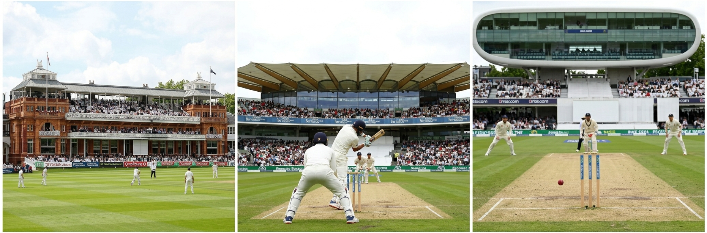
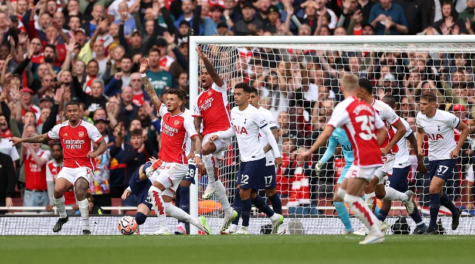

Sport
Londoners love sport. Choose a game and join the crowd!
Lord's Cricket Ground

Cricket
Cricket is a very old English sport. There are two teams of eleven players. They use a bat and a ball to score runs. The best place to watch a cricket match in London is Lord's Cricket Ground. A big match can last five days!
Never played cricket?
Try the cricket game and learn how to score runs.
Play the cricket gameWembley Stadium

Football
Football is the most popular sport in England. London has many big clubs: Arsenal, Chelsea and Tottenham. Watch a match and enjoy the noise of the crowd! The national stadium is Wembley. It has a huge arch.